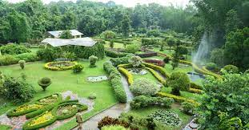
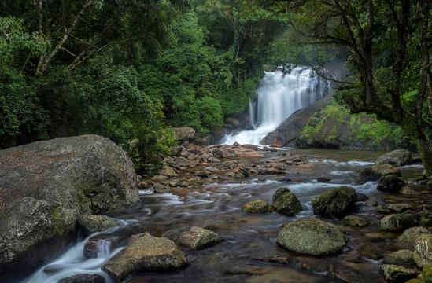
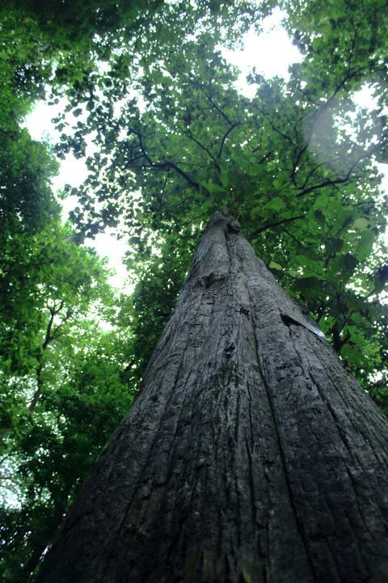

Teak Museum & Bio-resources Nature Park
Teak Museum is located 4 km from Nilambur, a town in the Malappuram district of Kerala, South India. Teak occurs naturally in India with the main teak forests found in Kerala.
Kottakkunnu

Kottakkunnu is a tourist destination in the state of Kerala located at Malappuram. Stationed right at the heart of the city of Malappuram, Kottakkunnu attracts many domestic as well as international tourists.
Adyanpara Waterfalls
Adyanpara Falls is a cascading waterfall in the Kurmbalangodu village of Nilambur taluk in Kerala, India. It is 14 kilometres from Nilambur town, and attracts tourists from various parts of Kerala. This is a seasonal waterfalls.
Conolly's Plot
Serene forest around a teak plantation